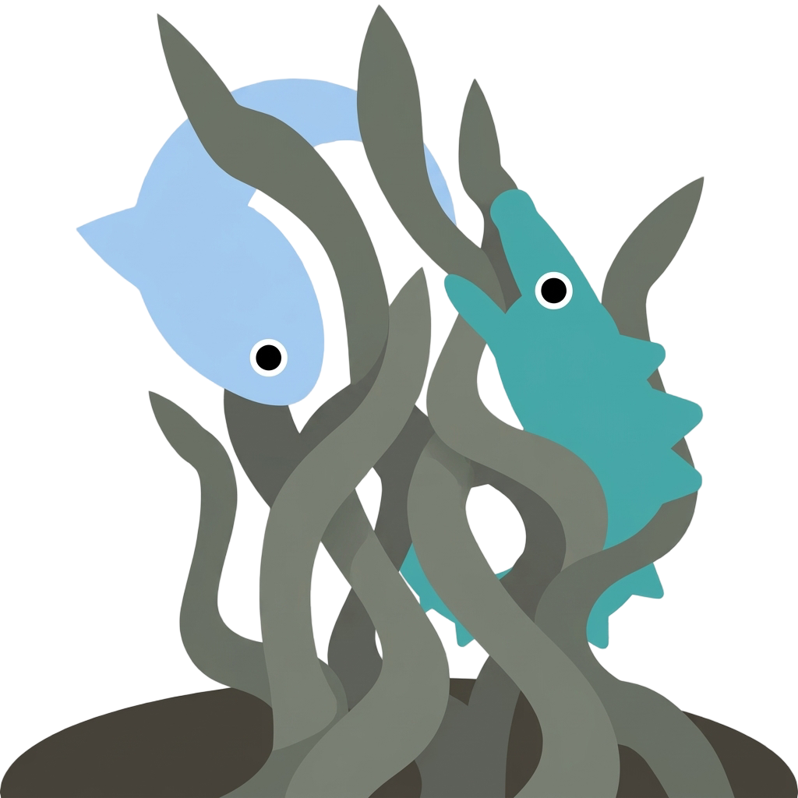
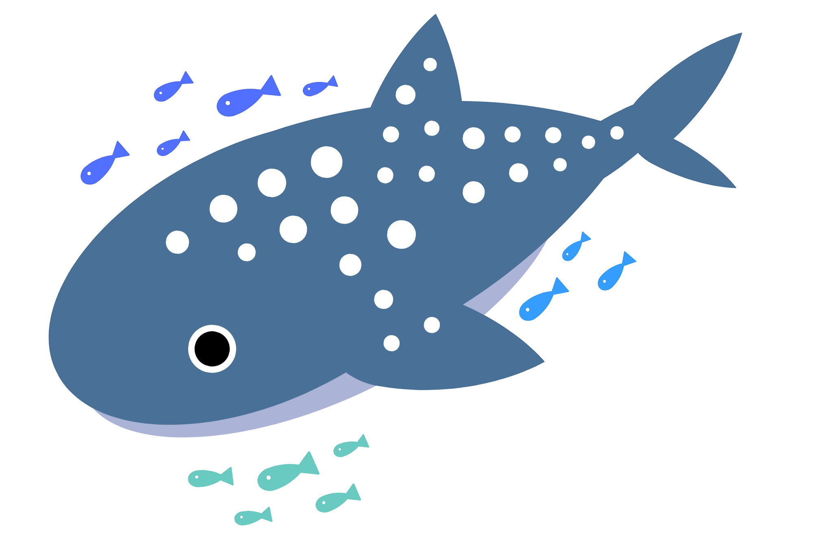
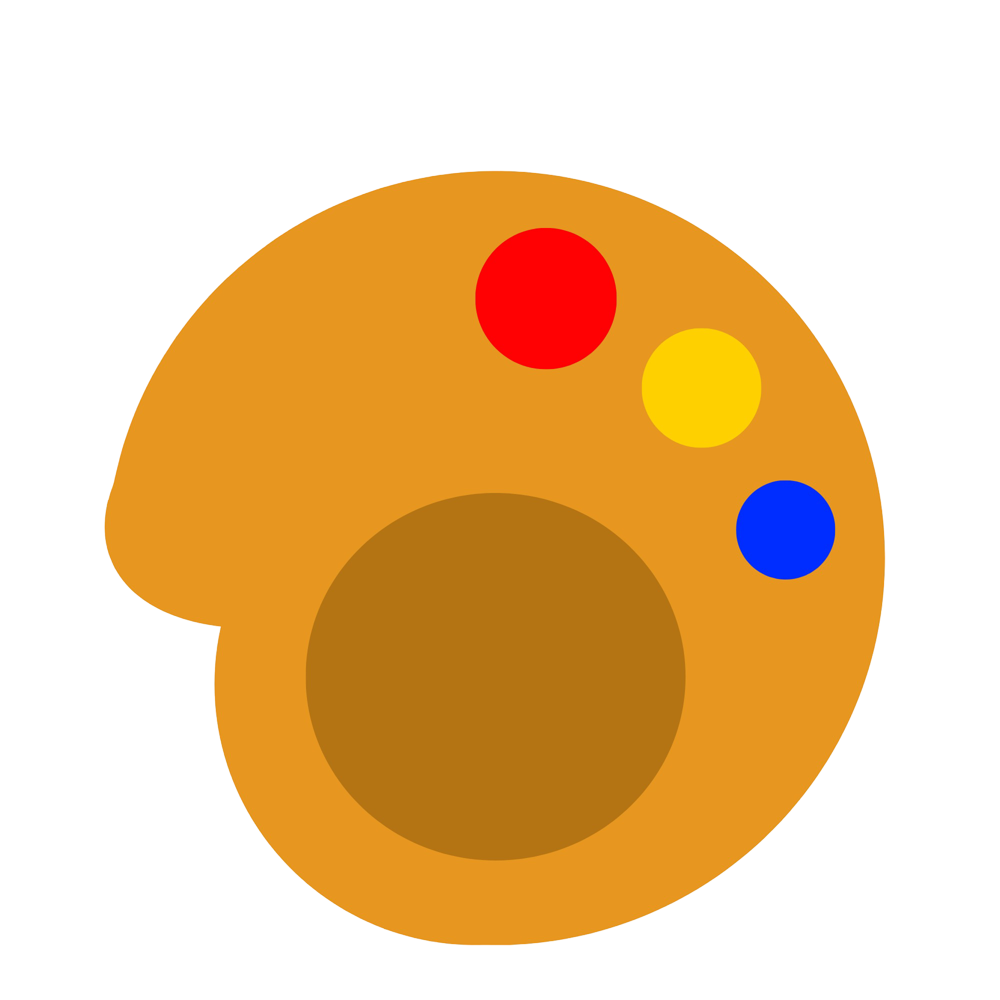

Find us


Why hiu
Our logo takes inspiration from Surabaya, our home city, whose iconic symbol features a shark (hiu in Indonesian) and a crocodile. We chose the shark as a representation of our connection to the city.

The design is inspired by whale sharks, which provide shelter for other fish and enable them to grow, explaining why the shark has dots. It is also shaped like a palette, with the dots resembling paint and the shark resembling the palette, because we believe that art is an important part of life and that we can connect people through art.


Team
- Kennard Alvaro Hadinata Painter
- Rastha Himawan Photographer
- Zakiyyah An Nafisa Writer